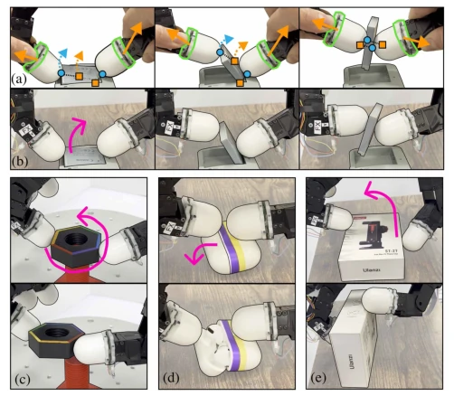
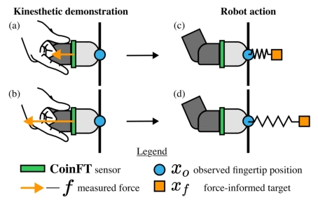
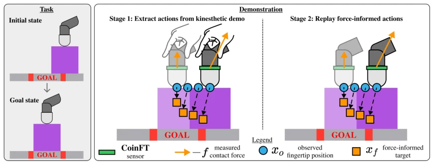
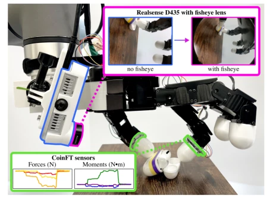
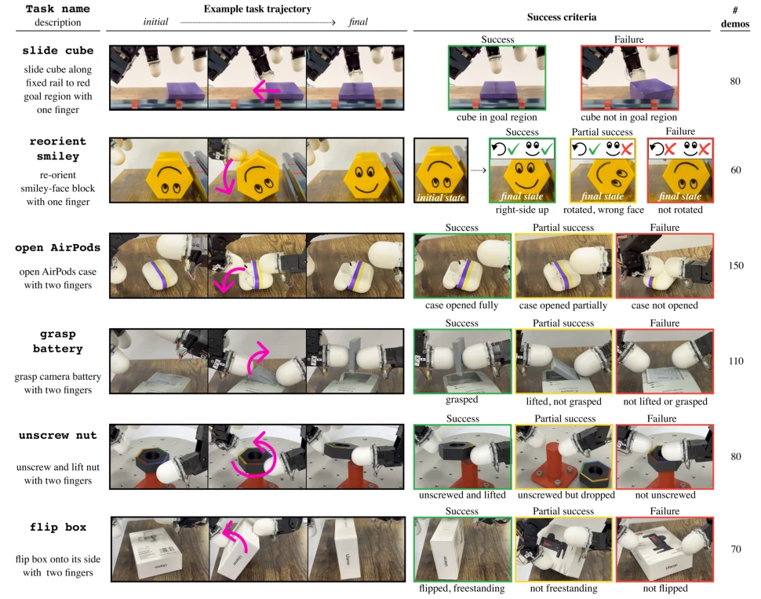
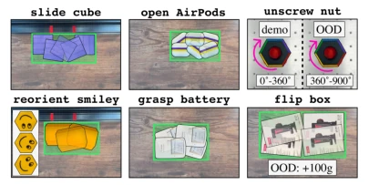
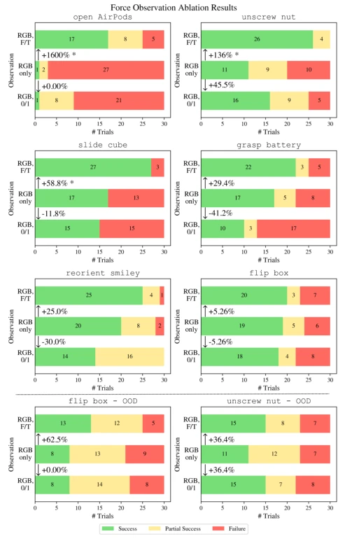
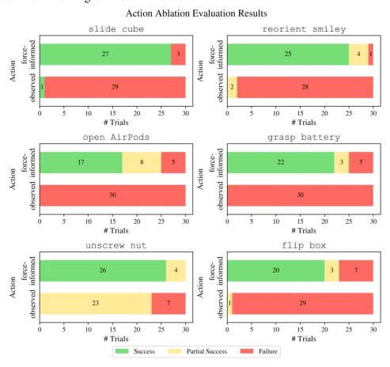

DexForce has executed this task excellently, finally pulling "force" out of the black box of imitation learning. Traditional teleoperation teaching robots to screw bolts is like dancing blindfolded; hand shapes do not align and objects cannot be felt [17, 18, 20, 21]. DexForce infers "force-aware actions" from force sensor data during teleoperation, enabling robots not only to move but also to "apply force". A 76% success rate compared to 0% for directly learning positions is simply a decisive advantage. However, do not rejoice too early; this method relies on the force control parameter $k_f$, and relying on human hands to drag the robot makes scaling data collection unfeasible. It serves more as a research tool, demonstrating that force information in fine manipulation is not merely icing on the cake, but a crucial necessity.
The core of fine manipulation is "force", but existing data collection methods are too "blind". Mainstream teleoperation relies on motion remapping, suffering from the "human-hand to robot-hand correspondence problem" [17, 18]; when humans move smoothly, the robot hand may not keep up. More fatally, there is a lack of haptic feedback [20, 21]; the demonstrator does not know how much force the robot actually used. Although some works attempt to use force sensing [26, 27], they typically assume fixed grasps and cannot handle contact switching. DexForce aims to solve: how to extract force-reproducible actions from teleoperation, not just position trajectories.

Fig. 1: (a) DexForce extracts force-informed actions (orange squares) from kinesthetic demonstrations by augmenting observed robot positions (blue circles) according to contact forces (orange arrows) measured with 6-axis force-torque sensors (green). (b) Executing force-informed actions allows the robot to reproduce forces applied in the kinesthetic demonstration, thereby executing the task. DexForce enables us to collect high-quality demonstrations for training policies on a variety of contact-rich tasks like (c) unscrewing a nut, (d) opening an AirPods case and (e) flipping a box.

Fig. 2: The left column shows kinesthetic demonstrations where the operator applies (a) a small force and (b) a larger force to a surface. In both scenarios, even though the operator applies different amounts of force, the current fingertip position recorded during the demonstrations, denoted with a blue circle, is the same. The difference between the observed fingertip positions and force-informed targets is proportional to the contact force f (c, d). Note: we visualize −f, the contact force exerted by the object onto the finger.
The core is a two-stage process. In the first stage, the teleoperator drags the robot hand, recording position $x_o$ and force $f$. The key innovation lies in using the formula $x_f = x_o + k_f f$ to calculate the "force-aware target position", converting force information into position commands. Here $k_f$ is a hand-tuned stiffness parameter, ensuring force is encoded into displacement. In the second stage, the robot replays these targets using an impedance controller, generating pure robot data without human hands (image + force + torque). This step is crucial because teleoperation images contain human hands, while test images do not; replaying eliminates domain differences. Finally, Diffusion Policy [3] is used to learn to predict these targets. This is equivalent to encoding "force" into "position", allowing the policy network to learn "pushing" rather than "moving". Impedance control ensures stability during execution, avoiding the instability issues of direct force control.

Fig. 3: The DexForce two-stage demonstration collection procedure, illustrated with a one-finger task where the robot must slide a purple square along a fixed surface to the red goal region. Note: we visualize −f, the contact force exerted by the object onto the finger.

Fig. 6: Hardware setup - Robot: Allegro hand; Camera: wrist-mounted RealSense D435 (blue), to capture RGB images, with a fisheye lens attachment (pink, adapted from [44]), which increases the camera field of view to capture the entire workspace of the hand; Force-torque sensors: Two CoinFT sensors [43] (green) mounted at the bases of the thumb and index finger, to record 6-axis force-torque measurements. See project website for camera mounting and CoinFT details.
Tested on 6 contact-rich tasks, such as screwing nuts and opening headphone cases. Baseline comparison shows that the strategy directly learning positions has a success rate near 0, while DexForce averages 76%. Ablation studies show that adding 6-axis force data to observations yields huge improvements for high-precision tasks (e.g., AirPods), while binary contact signals are ineffective. Parameter $k_f$ has a tolerance range, but tasks that are too sensitive (e.g., screwing nuts) rely more on force. Under OOD testing, the force-aware strategy remains superior to pure vision.

Fig. 4: Task names, descriptions, example trajectories, success criteria, and number of training demonstrations.

Fig. 5: In our demonstrations, we randomly initialize object poses within the green regions. For our in-distribution evaluations, we sample 30 initial poses from within these green regions. For the unscrew nut demonstrations, we fix the position of the mount and randomize the initial rotation of the nut between 0°-360°. OOD scenarios: For unscrew nut, initial rotation of nut between 360°-900°. For flip box, the box is 100g heavier.

Fig. 8: Force observation ablation results for six in-distribution evaluations (first three rows) and two out-of-distribution (OOD) evaluations (bottom row). In each plot, we show the success rate increase or decrease from RGB-only policies to RGB, F/T and RGB, 0/1 policies (arrows between bars). * denotes statistical significance (Fisher’s exact test, α = 0.05). For the in-distribution evaluations, plots are ordered from highest to lowest success rate increase from RGB-only to RGB, F/T. The open AirPods, unscrew nut, and slide cube tasks benefit the most from force observations.

Fig. 7: Using force-informed actions to train policies is critical for policy learning success. Policies trained directly on observed fingertip positions, which do not account for contact forces, have near-zero success rates. policy performance. We supervise all policies on DexForce’s force-informed targets. For all tasks, we train three policies with the following observation ablations: - RGB, F/T: RGB image features concatenated with the raw 6-axis contact force and moment vectors for each finger. - RGB, 0/1: RGB image features concatenated with a binary contact signal for each finger. The contact signal is 1 if the finger is in contact (magnitude of the measured force exceeds 0.55N), and 0 if the finger is not in contact. We include this ablation because other work [45] has shown that b